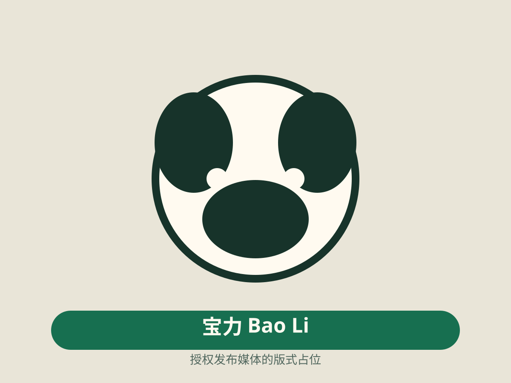

华盛顿篇章开始
美香与添添的史密森国家动物园生活构成这个故事的第一段长期机构背景。这里展示已发布居住记录，不补写未发布的抵达细节。
Family Fieldbook · Programme longform
一段跨越三代、两个方向的家族篇章：美香与添添在华盛顿的长期生活、四个已发布孩子，以及宝宝之子宝力重新抵达史密森国家动物园。
Media-limited family
美美香当前没有可公开授权影像。页面使用身份、年代、关系与地点建立家族辨识，不用其他熊猫照片替代。
01 · Member constellation
这是当前故事范围的结构化摘要，不是完整谱系图。每条代际连接仍由独立亲本断言支持。
02 · Family chapters
章节只引用已发布事件、关系和地点。叙事负责连接阅读，不改变底层事实。
美香与添添的史密森国家动物园生活构成这个故事的第一段长期机构背景。这里展示已发布居住记录，不补写未发布的抵达细节。
泰山、宝宝、贝贝与小奇迹分别拥有自己的身份、出生事件和来源。家族故事可以把四个时期连成一章，但不会把多个事件合并成一个“家庭事件”。
2020 年公开协议记录的是已公告计划；2023 年事件才记录实际完成的返回。家族时间线保留两个不同状态，不把公告写成已经发生。
宝宝之子宝力于 2024 年抵达史密森国家动物园，并在 2025 年公开亮相。第三代关系中，宝宝的母亲身份已确认，安安的亲本关系仍明确标记为暂定。
03 · Places and programme
地点使用已发布机构或粗粒度记录。不同成员在不同时间和地点的记录不会被组合成虚构的共同场景。
04 · Media state
当前故事范围中的媒体覆盖不均。每张影像都标明成员、署名和许可；无图成员保留无图状态。
No licensed media
香美香：暂无可公开授权影像。不会以宝力或其他熊猫图片替代。

05 · Sources and revisions
默认展示覆盖摘要；断言 ID、来源、事件和版本通过原生披露展开。